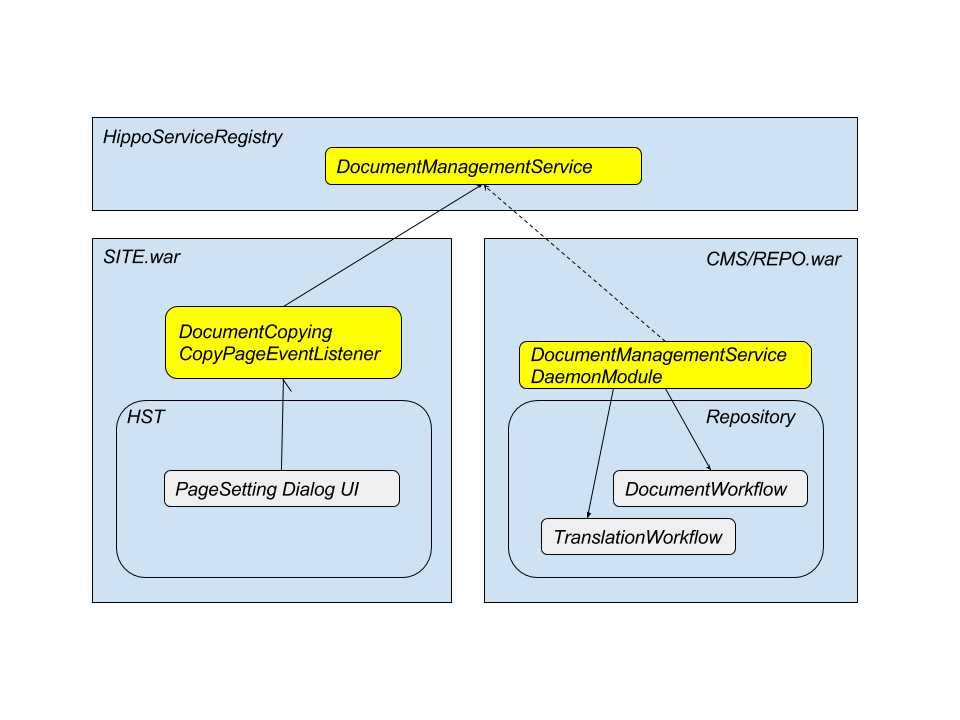

Architectural Views
Here's a runtime view of the system using this forge module components.
Note: Elements in yellow color are provided by this forge module project while the other elements are provided by brXM as built-in features.
Here are some highlights about each element and communication between elements.
-
DocumentManagementServiceis a service interface to invoke CMS Document/Folder Workflow operations more easily with simpler parameters. -
Service component implementation for
DocumentManagementServiceinterface is registered byDocumentManagementServiceDaemonModulethroughHippoServiceRegistry, and so the service can be used in any web applications in the same servlet container throughHippoServiceRegistry. In addition, the service is also exposed through JMX asDocumentManagementServiceMXBean, so it's also possible to use the service through JMX standard API. -
DocumentCopyingPageCopyEventListeneris an implementation to subscribeorg.hippoecm.hst.pagecomposer.jaxrs.api.PageCopyEventevent propagated by CMS Experience Manager through HST-2 Guava Event Bus. -
DocumentCopyingPageCopyEventListenerretrieves all the linked document paths in the page and its components (by invokingorg.hippoecm.hst.core.linking.DocumentParamsScanner), and copy each document from the source channel to the target channel if not existing in target channel.